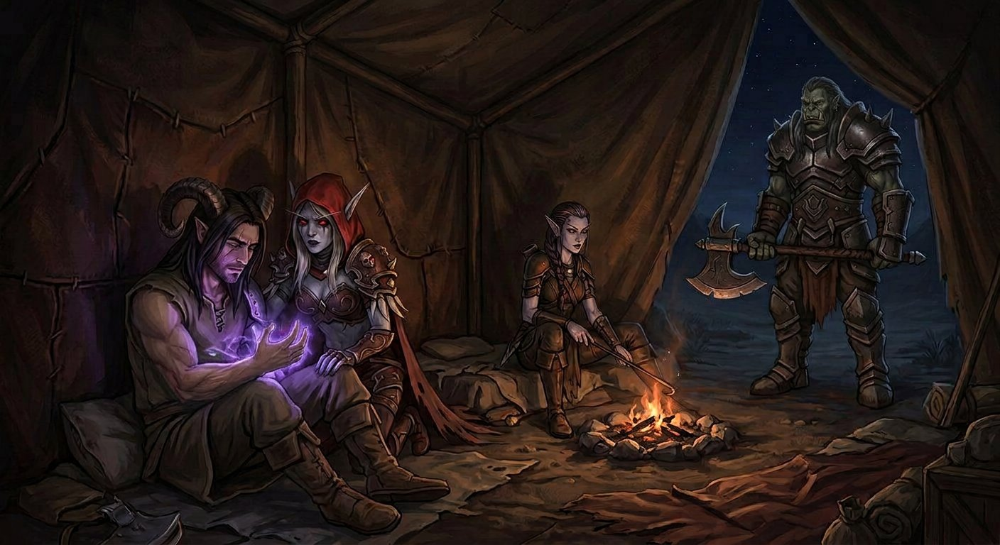

Capítulo Vinte e Dois
Memórias que não são suas
Voltaram ao acampamento em silêncio, e o silêncio durou os dois quilômetros inteiros, o que já era um recorde para um grupo que incluía Elyra.
Varokh foi o primeiro a sentar. Apoiou o machado contra uma pedra, cruzou os braços enormes e ficou olhando o fogo que ninguém tinha acendido ainda.
— Alguém vai acender isso ou a gente vai ficar no escuro fazendo cara feia?
Elyra acendeu. Nathan sentou-se num canto, longe do fogo, de costas para a parede do abrigo. A mão de metal estava apoiada no joelho e ele não tirava os olhos dela.
Sylvanas ficou de pé, perto da entrada, arco na mão. Não porque esperasse ataque. Porque era o que o corpo dela fazia quando precisava pensar.
✦
Foi Elyra quem falou primeiro, porque era sempre Elyra.
— Então vamos revisar — disse, com a voz calma demais, do jeito que ela falava quando estava organizando coisas terríveis em categorias. — Nathan não é um colecionado. Ele é um fabricado. A porta responde a ele. A coisa dentro da porta sabe o nome dele. E ele tem conhecimento embutido que não deveria ter.
Ela olhou para os três.
— Eu esqueci alguma coisa?
— Esqueceu que isso é horrível — disse Varokh.
— Isso é avaliação, não pessimismo.
— Eu não vejo diferença.
Nathan não disse nada. Continuou olhando a mão de metal. Abriu os dedos. Fechou. Girou o pulso. Os movimentos eram precisos, naturais, do jeito que tinham sido desde o primeiro dia em que a oitava prótese encaixou.
Agora ele se perguntava se “natural” era a palavra certa.
— Eu me lembro de fazer — disse, devagar. — Eu me lembro de sentar no chão do segundo abrigo, com as peças espalhadas, e pensar: ‘isso aqui encaixa assim.’ Eu me lembro de pensar isso. Não foi automático. Não foi mágica. Eu pensei, eu tentei, eu errei, eu consertei.
— E a primeira prótese funcionou? — perguntou Varokh.
— Não. Caiu em três dias.
— E a segunda?
— Seis dias.
— E a sétima?
Nathan pensou.
— Quatro meses. Até a fenda.
— Então houve curva de aprendizado — disse Varokh. — Houve erro. Houve tentativa.
— Houve.
Varokh olhou para Sylvanas.
— Isso não é o comportamento de alguém que está lembrando. É o comportamento de alguém que tem ferramentas embutidas e ainda assim precisa aprender a usar.
Sylvanas não respondeu imediatamente.
— Qual é a diferença? — perguntou, enfim.
— A diferença — disse Varokh — é que alguém que lembra já foi outra coisa antes. Alguém que tem ferramentas pode nunca ter sido nada antes de receber as ferramentas.
O silêncio que veio depois foi pesado.
— Eu era alguém — disse Nathan. — Eu tenho um mundo. Uma casa. Um fone de ouvido no travesseiro.
— Tem — concordou Varokh. — A pergunta é se você era só isso, ou se o Colecionador pegou alguém que era só isso e colocou alguma coisa a mais.
✦
Foi nessa noite que Nathan sonhou pela primeira vez com um lugar que não existia.
Não era sonho do jeito que ele conhecia. Não tinha aquela qualidade nebulosa e descartável dos sonhos normais, em que a gente aceita coisas absurdas porque o cérebro está de folga. Esse era nítido. Era sólido. Tinha cheiro.
Ele estava num corredor. Não de pedra, não de metal — de alguma coisa que parecia os dois ao mesmo tempo, uma superfície lisa e morna que cedia levemente sob os pés, como se o próprio chão estivesse vivo. Havia luz, mas não vinha de lugar nenhum: estava embutida nas paredes, pulsando devagar, num ritmo que parecia respiração.
Ele andava. Não por escolha. Os pés se moviam sozinhos, com a confiança de quem já tinha feito aquele caminho mil vezes.
No fim do corredor havia uma sala. Circular, enorme, com galerias concêntricas subindo até onde a vista alcançava. E nas galerias havia coisas. Não almas. Não pessoas. Coisas. Objetos que não deviam existir juntos: uma espada feita de luz congelada, um livro cujas páginas se moviam sozinhas, um instrumento musical que tocava sem ninguém tocar, um frasco com algo que parecia uma tempestade engarrafada.
E no centro da sala, uma mesa. De pedra negra, lisa, vazia.
Exceto por um sulco. Um sulco no formato exato de um corpo humano.
Nathan olhou para o sulco.
E o sulco olhou para ele.
✦

Ele acordou gritando.
Não um grito de pânico. Um grito de reconhecimento — aquele som involuntário que o corpo faz quando encontra algo que não deveria existir mas existe, e o cérebro não tem categoria pronta para processar.
Sylvanas estava ao lado dele antes que o grito terminasse. O arco na mão esquerda, a outra mão no ombro dele — firme, sem hesitação, do jeito que se segura alguém que está caindo.
— Aqui — disse. — Você está aqui.
Nathan respirou. Uma vez. Duas. O abrigo voltou: a parede de couro, o cheiro de fumaça, o fogo baixo, Elyra acordando assustada, Varokh já de pé com o machado na mão.
— O que foi? — perguntou Elyra.
— Sonho — disse Nathan. — Só sonho.
Varokh olhou para ele por um tempo longo.
— Sonho não faz a gente acordar com a prótese brilhando — disse.
Nathan olhou para baixo. A mão de metal tinha um brilho violeta fraco, exatamente da cor dos sigilos da porta. O brilho diminuiu enquanto ele olhava, e em poucos segundos sumiu.
Mas tinha estado ali.
✦
Ele contou.
Não tudo de uma vez — contou em pedaços, devagar, como quem descreve um lugar que visitou mas não tem certeza de que era real. O corredor. A luz nas paredes. A sala circular. As coisas nas galerias. A mesa com o sulco.
— Coleção — disse Sylvanas.
— É.
— Você sonhou com a coleção dele.
— Eu estive na coleção dele. — Nathan passou a mão pelo rosto. — Não foi sonho, Sylvanas. Eu sei a diferença. Sonho é confuso. Isso era... memória.
— Memória de quê? — perguntou Elyra. — Você nunca esteve lá.
— Eu não — disse Nathan. — Mas alguma coisa dentro de mim esteve.
O silêncio durou.
— O sulco — disse Sylvanas, devagar. — No formato de um corpo.
— É.
— Do seu corpo?
Nathan fechou os olhos.
— Eu não sei. — A voz saiu baixa. — Eu não sei se era o meu. Mas quando eu olhei para aquilo, eu senti... eu senti que eu cabia. Do jeito que a gente sente quando volta para casa depois de muito tempo e o corpo sabe onde cada coisa está antes dos olhos verem.
Varokh descruzou os braços.
— Então é isso — disse. — Ele não te fabricou do nada. Ele pegou um molde. E o molde está lá dentro.
— Dentro da porta?
— Dentro do que quer que esteja atrás da porta. — Varokh apontou para a mão de Nathan. — E colocou o resto dentro de você.
✦
Sylvanas se afastou da parede e andou até o fogo. Sentou-se — o que já era incomum — e ficou olhando as brasas por um tempo que ninguém interrompeu.
Quando falou, a voz era baixa e absolutamente firme.
— A gente precisa decidir três coisas — disse. — Primeira: a gente fica aqui ou vai embora?
— Se a gente for embora — disse Elyra —, a gente nunca mais acha essa porta. A Gorja move as coisas.
— Segunda — continuou Sylvanas. — Se a gente fica, a gente abre a porta ou não?
— Nathan disse que consegue.
— Nathan disse que é a fechadura. — Sylvanas olhou para ele. — Isso não é a mesma coisa que conseguir. É a mesma coisa que ser obrigado.
Nathan não desviou.
— E a terceira?
Sylvanas ficou quieta por um tempo.
— Se a gente abrir — disse — e se lá dentro tiver o que eu acho que tem... a gente precisa decidir antes se você volta ou se você fica.
Ela olhou para ele.
— Porque se aquele sulco for seu, e se o que estiver lá dentro for o molde que o Colecionador usou para te fazer, então abrir aquela porta pode te completar. Ou pode te desfazer. E eu não vou abrir aquela porta sem saber qual dos dois a gente está escolhendo.
Nathan olhou para a mão de metal.
Abriu. Fechou.
— Eu preciso dormir de novo — disse.
— O quê?
— Se aquilo foi memória, tem mais. Eu preciso ver o resto. — Ele olhou para Sylvanas. — E eu preciso que você esteja aqui quando eu acordar. Porque da última vez, o que me trouxe de volta foi a sua mão no meu ombro.
Sylvanas não disse nada por um tempo longo.
Depois se aproximou. Parou a três metros. E, pela primeira vez desde o início de tudo, atravessou os três metros e sentou-se ao lado dele.
— Dorme — disse.
E Nathan dormiu.